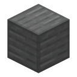

What it does#
The  Infinity Generator is an addon by currentbrick that needs Infinity Stone Core. Put an Infinity Stone in it and it makes Forge
Energy (FE) for any machine that takes it. The stone isn't used up, so the generator runs for as long as the stone stays inside.
Infinity Generator is an addon by currentbrick that needs Infinity Stone Core. Put an Infinity Stone in it and it makes Forge
Energy (FE) for any machine that takes it. The stone isn't used up, so the generator runs for as long as the stone stays inside.
Making it#
The recipe comes from Infinity Stone Core, and the generator shows up in its creative tab.
| Row | Ingredients |
|---|---|
| Top | Dwarf Star Alloy Plate, Vibranium Circuit, Dwarf Star Alloy Plate |
| Middle | Steel block, Nether Star, steel block |
| Bottom | Dwarf Star Alloy Plate, Vibranium Flux Capacitor, Dwarf Star Alloy Plate |
The Vibranium Circuit and Vibranium Flux Capacitor are  Palladium items. Any steel block works (
Palladium items. Any steel block works (#forge:), like
Using it#
- Right-click it to open its menu, which has one slot. Only the six Infinity Stones and the
 Tesseract fit.
Tesseract fit. - The block changes to show which stone is inside, and the Tesseract counts as the Space Stone.
- While a stone is in, it makes energy every tick until it's full, and sends it out to every block touching it that takes FE, on all six sides.
- Take the stone out and it stops making energy, but keeps sending out what it has stored.
A stone sitting in a generator isn't in anyone's gauntlet, so nobody gets its power, and there's still only one of each stone per world.
Config#
The generator's numbers are in its own common config file. The defaults are huge on purpose: it's powered by an Infinity Stone.
| Setting | Default | What it does |
|---|---|---|
energyGenerated | 1,000,000 | FE made every tick while a stone is inside |
maxCapacity | 1,000,000 | FE it can store |
maxTransfer | 1,000,000 | FE it can send to each neighbouring block per tick |
Each setting can go up to 2,147,483,647.